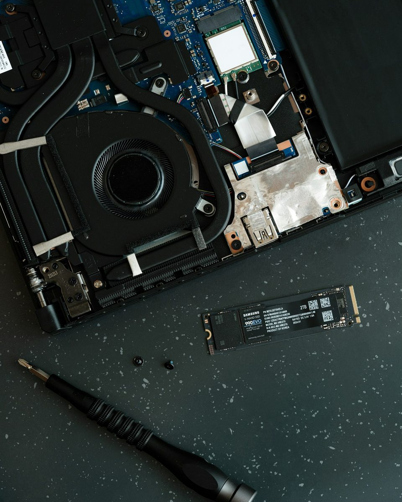

Un souci avec votre ordinateur ? On s'en occupe.
Dépannage, réparation et installation, toutes marques. On répare, on explique simplement, et on peut venir chez vous.
Au Guilvinec, pour tout le Pays Bigouden

Quel est votre souci ?
Pas besoin de connaître les termes techniques. Choisissez ce qui ressemble à votre situation pour voir ce que nous pouvons faire.
Mon ordinateur est devenu très lent
Nous cherchons ce qui le ralentit : programmes inutiles, mises à jour en retard, disque fatigué.
Souvent, un nettoyage suffit. Sinon, nous vous proposons de changer une pièce plutôt que tout l'ordinateur, quand cela vaut le coup.
Il ne s'allume plus ou ne démarre plus
Nous faisons un diagnostic pour savoir si la panne vient du matériel ou du système.
Nous réparons toutes les marques et, quand c'est possible, nous récupérons vos fichiers.
Des publicités ou des fenêtres bizarres s'affichent
Nous recherchons et supprimons les virus et les logiciels indésirables.
Nous vous donnons aussi quelques réflexes simples pour repérer les arnaques par courriel ou sur internet.
Mon imprimante ou le wifi ne fonctionne pas
Installation et réglage de l'imprimante, connexion au wifi, branchement des appareils.
Nous pouvons venir chez vous pour régler le problème sur place.
Je veux garder mes photos et mes documents
Nous transférons vos fichiers vers un nouvel ordinateur, une clé USB ou un disque externe.
C'est aussi l'occasion de mettre en place une sauvegarde pour ne rien perdre.
Je dois changer d'ordinateur
Nous vous conseillons selon votre usage et vendons du matériel neuf ou reconditionné.
Nous l'installons, transférons vos données et vous montrons comment vous en servir.
Votre problème n'est pas dans la liste ? Passez nous voir au Guilvinec, nous regarderons ensemble.
Ce que nous faisons
Dépannage et réparation
Ordinateurs fixes et portables, toutes marques.
Installation
Mise en service d'un ordinateur, d'une imprimante ou d'un appareil multimédia.
Vente de matériel
Ordinateurs et matériel multimédia, neufs ou reconditionnés.
Intervention à domicile
Quand il est plus simple de régler le problème chez vous.
Photo Vitaly Gariev, Unsplash.
Chez vous, à votre rythme
Vous ne pouvez pas vous déplacer, ou le problème concerne votre box, votre imprimante ou votre installation ? Nous intervenons à domicile dans le Pays Bigouden.
- Réglages sur votre propre matériel
- Explications simples, sans jargon
- Le temps de vous montrer comment faire
Horaires et adresse
L'atelier se trouve au Guilvinec et intervient dans tout le Pays Bigouden.
SOS PC 29
13 rue de Lagad Yar29730 Guilvinec
Lundi au samedi
8 h à 20 h
Horaires indicatifs, à confirmer.
Nous contacter
Décrivez votre problème avec vos mots : nous vous dirons ce que nous pouvons faire, en atelier ou chez vous.
Le formulaire de contact et les coordonnées seront ajoutés sur le site définitif. En attendant, l'atelier vous accueille au 13 rue de Lagad Yar, au Guilvinec.